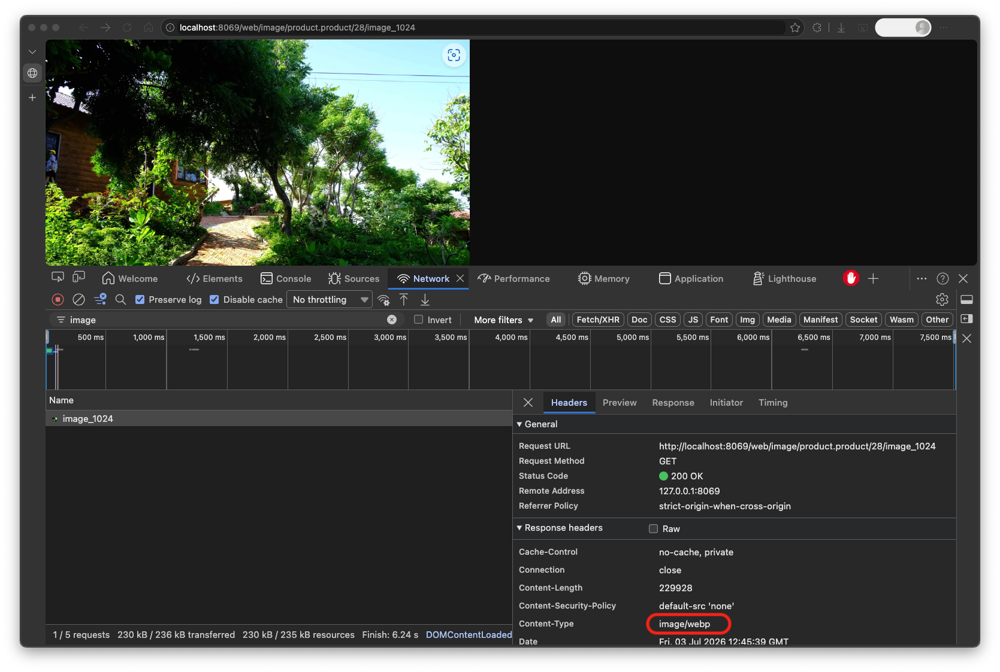

<!-- ============================================================
     SCREENSHOT CHECKLIST (remove this block before publishing)
     [ ] banner.png       — 1200x630px hero banner
     [ ] icon.png         — 128x128px logo
     [ ] screenshot_1.png — Chrome DevTools Network tab: select any /web/image request →
                            Response Headers → Content-Type: image/webp
     [ ] screenshot_2.png — Website Settings → Auto WebP section (toggle On, quality input,
                            "Clear WebP Cache" button visible)
     [ ] screenshot_3.png — Confirm dialog when clicking "Clear WebP Cache"
     [ ] screenshot_4.png — Green toast "WebP Cache Cleared" after deletion
     ============================================================ -->

<section class="oe_container">
<div class="oe_row oe_spaced">

    <!-- HERO -->
    <h1 class="oe_slogan" style="font-size:40px; font-weight:700;">
        Auto WebP Image Conversion
    </h1>
    <h2 class="oe_slogan" style="font-size:22px; color:#555;">
        Your website images, 30% smaller. Zero effort.
    </h2>

    <p style="text-align:center; font-size:17px; max-width:780px; margin:0 auto 20px; line-height:1.7;">
        Slow images kill conversions. Studies show a <strong>1-second delay in page load reduces sales by 7%</strong>.
        This module automatically converts every image on your Odoo website to
        <strong>WebP</strong> — the modern format that's 25–35% smaller than JPEG or PNG
        at the same visual quality — so your store loads faster, ranks higher on Google,
        and keeps customers from bouncing.
    </p>

    <div style="text-align:center; margin:8px 0 32px;">
        <span style="background:#875A7B; color:#fff; padding:12px 32px; border-radius:4px; font-size:17px; font-weight:700; letter-spacing:.3px;">
            Install once. Every image optimized. Automatically.
        </span>
    </div>

    <!-- [SCREENSHOT 1] -->
    

    <hr/>

    <!-- BENEFITS -->
    <h3 class="oe_slogan">Why Your Store Needs This</h3>

    <div style="display:grid; grid-template-columns:1fr 1fr 1fr; gap:20px; max-width:900px; margin:0 auto 8px; text-align:center; font-size:15px;">

        <div style="padding:24px 16px; background:#f5f0f8; border-radius:6px;">
            <div style="font-size:36px; margin-bottom:8px;">🚀</div>
            <strong style="font-size:16px;">Faster Page Loads</strong><br/>
            <span style="color:#555;">Images 25–35% smaller means your pages load faster on every device, especially mobile.</span>
        </div>

        <div style="padding:24px 16px; background:#f5f0f8; border-radius:6px;">
            <div style="font-size:36px; margin-bottom:8px;">📈</div>
            <strong style="font-size:16px;">Better Google Rankings</strong><br/>
            <span style="color:#555;">Page speed is a Google ranking factor. Smaller images improve Core Web Vitals and SEO scores.</span>
        </div>

        <div style="padding:24px 16px; background:#f5f0f8; border-radius:6px;">
            <div style="font-size:36px; margin-bottom:8px;">💰</div>
            <strong style="font-size:16px;">Lower Bandwidth Cost</strong><br/>
            <span style="color:#555;">Serve the same images using 30% less bandwidth. Significant savings at scale.</span>
        </div>

    </div>

    <hr/>

    <!-- FEATURES -->
    <h3 class="oe_slogan">Everything Handled For You</h3>

    <div style="display:grid; grid-template-columns:1fr 1fr; gap:16px; max-width:900px; margin:0 auto; font-size:15px;">

        <div style="background:#f9f9f9; padding:20px; border-radius:4px;">
            <strong>🔄 Works on Every Image, Instantly</strong><br/>
            Product photos, blog banners, sliders, logos — every image served by Odoo
            is automatically converted. No manual export, no plugins, no image re-uploading.
        </div>

        <div style="background:#f9f9f9; padding:20px; border-radius:4px;">
            <strong>⚡ Lightning-Fast After First Load</strong><br/>
            Converted images are cached. First request takes ~90ms to convert.
            Every request after that: ~6ms served directly from cache —
            faster than most CDNs, with no monthly fee.
        </div>

        <div style="background:#f9f9f9; padding:20px; border-radius:4px;">
            <strong>🌐 Full Multi-Website Support</strong><br/>
            Running multiple Odoo websites? Each site gets its own independent toggle
            and quality setting. Change one without affecting the others.
        </div>

        <div style="background:#f9f9f9; padding:20px; border-radius:4px;">
            <strong>🎚️ Quality You Control</strong><br/>
            Set compression quality from 1–100 per website (default: 85 — visually
            identical to JPEG 95). Fine-tune the balance between file size and image sharpness.
        </div>

        <div style="background:#f9f9f9; padding:20px; border-radius:4px;">
            <strong>🗑️ One-Click Cache Reset</strong><br/>
            Need a fresh start? Hit "Clear WebP Cache" in Website Settings.
            A confirmation dialog prevents accidents. Done in seconds.
        </div>

        <div style="background:#f9f9f9; padding:20px; border-radius:4px;">
            <strong>🧹 Self-Maintaining Cache</strong><br/>
            Delete a product? Old cache entries are cleaned up automatically
            via Odoo's built-in daily autovacuum. Your database stays lean.
        </div>

        <div style="background:#f9f9f9; padding:20px; border-radius:4px;">
            <strong>🛡️ 100% Safe — Always</strong><br/>
            Older browsers that don't support WebP (IE, some bots) automatically
            receive the original image. SVGs are skipped. Nothing ever breaks.
        </div>

        <div style="background:#f9f9f9; padding:20px; border-radius:4px;">
            <strong>🔁 Always Up to Date</strong><br/>
            Update a product image? The old WebP is ignored and a fresh one is
            generated on the next request. No manual cache invalidation needed.
        </div>

    </div>

    <!-- [SCREENSHOT 2] -->
    <div style="margin-top:32px;">
        
    </div>

    <hr/>

    <!-- CONFIGURATION -->
    <h3 class="oe_slogan">Simple to Configure</h3>

    <p style="text-align:center; font-size:15px; max-width:760px; margin:0 auto 20px;">
        Everything lives in one place: <strong>Website → Configuration → Settings → Auto WebP Image Conversion</strong>.
    </p>

    <div style="display:grid; grid-template-columns:1fr 1fr 1fr; gap:16px; max-width:900px; margin:0 auto; font-size:15px; text-align:center;">

        <div style="background:#f9f9f9; padding:20px; border-radius:4px;">
            <strong>Toggle On/Off</strong><br/>
            <span style="color:#555;">Enable or disable per website with a single switch.</span>
        </div>

        <div style="background:#f9f9f9; padding:20px; border-radius:4px;">
            <strong>Set Quality (1–100)</strong><br/>
            <span style="color:#555;">Default 85. Change it and the cache resets automatically.</span>
        </div>

        <div style="background:#f9f9f9; padding:20px; border-radius:4px;">
            <strong>Clear Cache Button</strong><br/>
            <span style="color:#555;">Force a full regeneration anytime, with a confirmation dialog.</span>
        </div>

    </div>

    <hr/>

    <!-- INSTALLATION -->
    <h2 class="oe_slogan" style="margin-top:40px;">Installation</h2>

    <p style="text-align:center; font-size:15px; color:#555; max-width:780px; margin:0 auto 8px;">
        Requires <strong>libwebp</strong> on your server so Pillow can encode WebP images.
        One-time setup — follow the guide for your environment.
    </p>

    <h3 style="color:#875A7B;">Linux (Ubuntu / Debian)</h3>
    <pre style="background:#2b2b2b; color:#f8f8f2; padding:16px; border-radius:4px; font-size:13px; overflow-x:auto;">
sudo apt install -y libwebp-dev
sudo /opt/odoo/venv/bin/pip install --force-reinstall --no-binary Pillow Pillow
sudo systemctl restart odoo</pre>

    <h3 style="color:#875A7B;">Windows</h3>
    <p style="font-size:15px;">Pillow's official Windows wheel already includes WebP — no extra install needed.</p>
    <pre style="background:#2b2b2b; color:#f8f8f2; padding:16px; border-radius:4px; font-size:13px; overflow-x:auto;">
pip install --upgrade Pillow</pre>

    <h3 style="color:#875A7B;">macOS (Intel)</h3>
    <pre style="background:#2b2b2b; color:#f8f8f2; padding:16px; border-radius:4px; font-size:13px; overflow-x:auto;">
brew install webp
/path/to/venv/bin/pip install --force-reinstall --no-cache-dir --no-binary Pillow Pillow</pre>

    <h3 style="color:#875A7B;">macOS Apple Silicon (M1/M2/M3/M4)</h3>
    <p style="font-size:15px; background:#fff3cd; padding:12px 16px; border-radius:4px; border-left:4px solid #ffc107;">
        ⚠ Homebrew on Apple Silicon uses <code>/opt/homebrew/</code>. You must set library paths explicitly, otherwise Pillow compiles without WebP support even though libwebp is installed.
    </p>
    <pre style="background:#2b2b2b; color:#f8f8f2; padding:16px; border-radius:4px; font-size:13px; overflow-x:auto;">
brew install webp
LDFLAGS="-L/opt/homebrew/lib" CPPFLAGS="-I/opt/homebrew/include" \
  /path/to/venv/bin/pip install --force-reinstall --no-cache-dir --no-binary Pillow Pillow</pre>

    <h3 style="color:#875A7B;">Verify it works</h3>
    <pre style="background:#2b2b2b; color:#f8f8f2; padding:16px; border-radius:4px; font-size:13px; overflow-x:auto;">
python -c "from PIL import Image; import io; img=Image.new('RGB',(1,1)); out=io.BytesIO(); img.save(out,format='WEBP'); print('OK, bytes:', len(out.getvalue()))"
# Expected: OK, bytes: 44</pre>

    <hr/>

    <!-- FAQ -->
    <h2 class="oe_slogan" style="margin-top:40px;">FAQ</h2>

    <h4 style="color:#875A7B; margin-top:24px;">Does WebP look different from the original?</h4>
    <p style="font-size:15px;">
        No. At the default quality of 85, WebP is visually indistinguishable from JPEG at quality 95.
        PNG images with transparency are losslessly converted — pixel-perfect, no quality loss at all.
    </p>

    <h4 style="color:#875A7B; margin-top:24px;">Will it slow down my server?</h4>
    <p style="font-size:15px;">
        Only the very first request for each image triggers conversion (~90ms).
        Every request after that hits the cache at ~6ms — faster than a CDN, no recurring cost.
    </p>

    <h4 style="color:#875A7B; margin-top:24px;">What happens when I update a product image?</h4>
    <p style="font-size:15px;">
        The cache is keyed by the image's last-modified date. Updating an image automatically
        invalidates the old cache entry — a fresh WebP is generated on the next request.
    </p>

    <h4 style="color:#875A7B; margin-top:24px;">What if a visitor's browser doesn't support WebP?</h4>
    <p style="font-size:15px;">
        They receive the original image in its original format, unchanged.
        All modern browsers (Chrome, Firefox, Safari 14+, Edge) support WebP.
        Old browsers and bots are handled gracefully — nothing breaks.
    </p>

    <h4 style="color:#875A7B; margin-top:24px;">Does it work with multiple websites?</h4>
    <p style="font-size:15px;">
        Yes. Each website has its own on/off toggle, quality setting, and isolated cache.
        Changing settings on one website never affects another.
    </p>

    <h4 style="color:#875A7B; margin-top:24px;">I get "KeyError: 'WEBP'" in the Odoo log.</h4>
    <p style="font-size:15px;">
        Pillow was installed without the WebP encoder. Install <code>libwebp-dev</code> (Linux)
        or <code>brew install webp</code> (macOS) then reinstall Pillow from source
        using <code>--no-binary Pillow</code>. The module logs the exact command to run.
    </p>

    <hr/>

    <!-- CTA -->
    <div style="text-align:center; background:#f5f0f8; padding:40px 24px; border-radius:8px; margin:32px 0 16px;">
        <h2 style="color:#875A7B; font-size:28px; margin-bottom:12px;">
            Faster site. Better rankings. More sales.
        </h2>
        <p style="font-size:16px; color:#555; max-width:600px; margin:0 auto 20px; line-height:1.7;">
            One install. No ongoing maintenance. Your entire image library optimized —
            automatically, forever.
        </p>
        <span style="background:#875A7B; color:#fff; padding:12px 36px; border-radius:4px; font-size:17px; font-weight:700;">
            Get it now
        </span>
    </div>

    <p style="text-align:center; font-size:14px; color:#888; margin-top:16px;">
        Questions before buying? Contact <a href="mailto:support@duo-tek.vn">support@duo-tek.vn</a> — we reply fast.
    </p>

</div>
</section>
